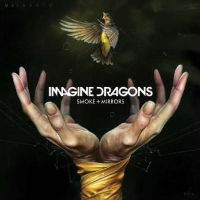
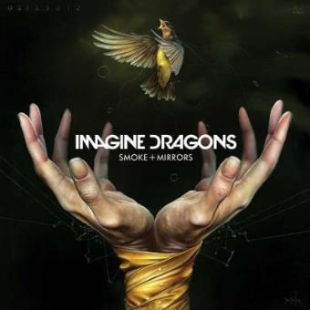
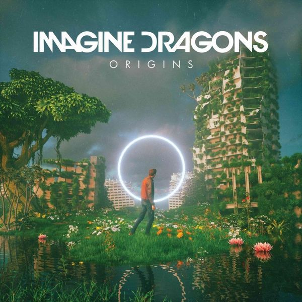
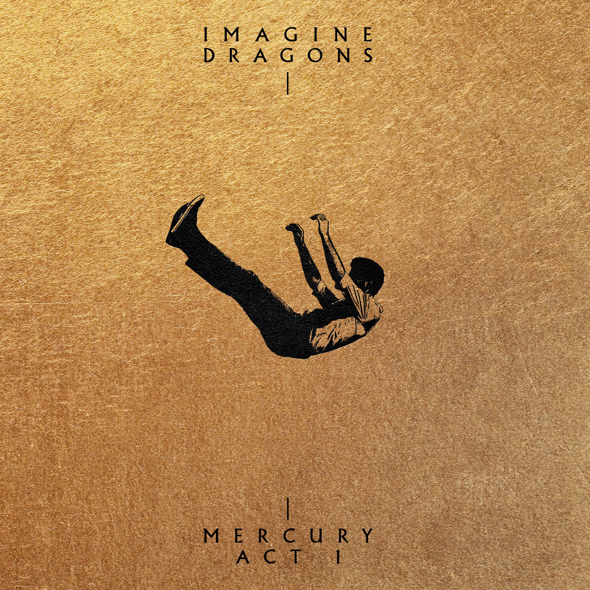
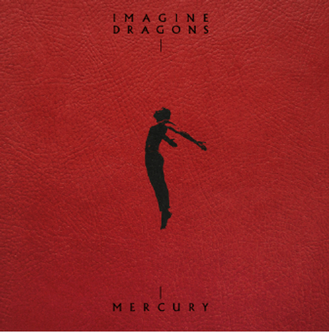
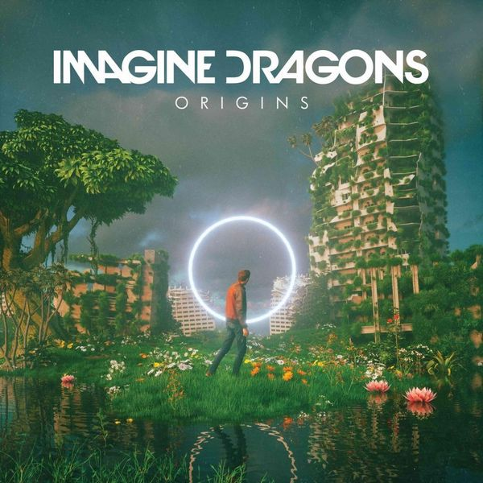
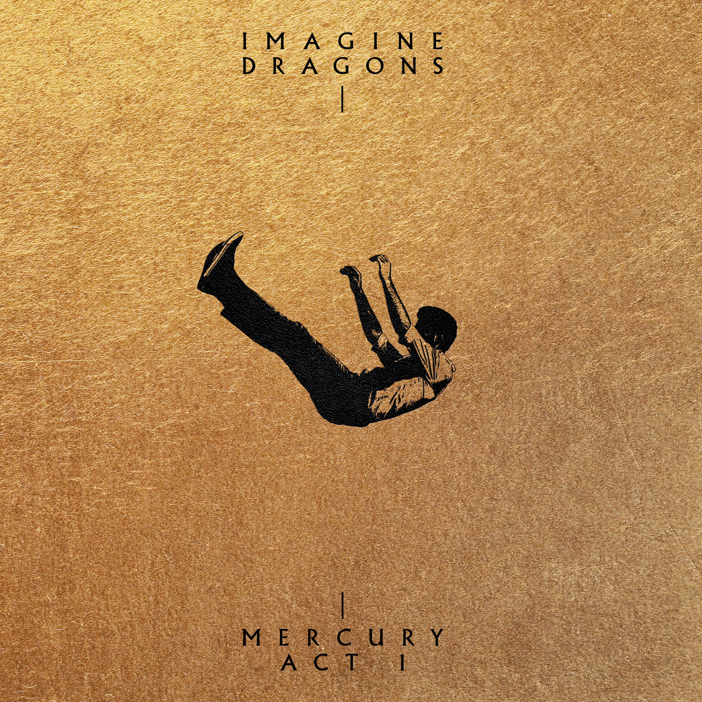
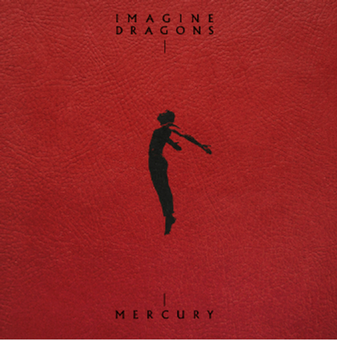

 





É o álbum de estreia da banda. Foi lançado em 4 de setembro de 2012 pela Interscope Records. Gravado entre 2010 e 2012, o álbum foi produzido principalmente pela própria banda. De acordo como o vocalista Dan Reynolds, o álbum levou três anos para ficar pronto. Foram vendidas mais de 83.000 cópias na estreia, foi o oitavo mais vendido no mundo em 2013, com 2,2 milhõs de vendas.
É o segundo álbum de estúdio da banda americana de rock Imagine Dragons. Produzido pelo próprio grupo, com auxílio do produtor inglês Alexander Grant, o disco foi lançado pela gravadora Interscope Records a 17 de fevereiro de 2015 nos Estados Unidos.
É o terceiro álbum de estúdio da banda americana de Indie rock Imagine Dragons, lançado em 23 de junho de 2017 pela KIDinaKORNER e Interscope Records. Após o lançamento do álbum Smoke + Mirrors e uma grande turnê mundial, um hiato auto-imposto de um ano, por 2016, se seguiu e, depois, pelas mídias sociais, anunciaram a gravação de um novo disco. O novo álbum foi anunciado em 9 de maio. Em comparação com Night Visions e Smoke + Mirrors, o líder da banda, Dan Reynolds, afirmava que o novo trabalho era uma "evolução para o Imagine Dragons".
É o quarto álbum de estúdio da banda americana de pop rock Imagine Dragons, lançado em 9 de novembro de 2018 pelas gravadoras Kidinakorner, Polydor Recordse Interscope Records. O álbum foi produzido pelos próprios membros da banda, juntamente com Alex da Kid, Mattman & Robin, John Hill, Joel Little, Tim Randolph e Jayson DeZuzio, que produziram a maior parte do trabalho anterior da banda, Evolve (2017), bem como Jorgen Odegard. O vocalista Dan Reynolds descreveu Origins como um "álbum irmão" de Evolve, e que completaria um ciclo de suas canções. Origins recebeu críticas geralmente mistas dos críticos, mas muitos afirmaram que o álbum é uma melhoria notável em relação a Evolve. O álbum foi precedido por quatro singles: "Natural", "Zero", "Machine" e "Bad Liar". Um single posterior, "Birds", foi lançado em 2019.
Lançado no dia 13 de setembro de 2021, Mercury Act 1 pode ser resumido por duas palavras: vida e luto. Através das canções presentes nesse disco como “Wrecked” , “Lonely” e “My Life”, o artista deixa claro que esteve tomado por sentimentos ruins causados pelas perdas. Em uma declaração dada pelo por ele, afirmou: “Eu passei um bom tempo da minha vida sem expressar a minha verdade, escrevendo sobre problemas, como crises de fé, de maneira metafórica para que minha família não soubesse do que estava falando”. Então, durante esse período, teve que lidar diretamente com a perda e sentiu a necessidade de deixar claro o que estava passando. Em níveis musicais, o disco mantém o estilo pop do Imagine Dragons, mas passeia entre o pop rock e até mesmo rap, como na primeira canção do MercuryActs 1 e 2, “Every”. O álbum conta também com estilos românticos e de superação, como nas canções “Follow You” e “It’s Ok” (que, em particular, me tocou profundamente). O período de pausa coincidiu com a pandemia, onde muitos de nós passamos por perdas e dores irreparáveis. Portanto, é muito emocionante e forte ouvir esses relatos.
Segunda parte de Mercury – Acts 1 e 2, composto por 18 faixas, que somam quase uma hora de música, a banda Imagine Dragons traz um respiro, expressando mensagens de superação, onde o artista deixa claro que, apesar de tudo, é importante recomeçar e continuar vivendo, tendo como principal motivo o amor. Isso fica bem claro em canções como “Symphony” e “I’m Happy”. Esse sentimento se transforma é expresso não só nas letras, mas também nos arranjos e ritmos, que deixam claros esse salto de sensação com canções mais animadas e até mesmo românticas. No lançamento, a banda deu a seguinte declaração: “Embora mergulhe em momentos de luto e busca, em sua essência, é uma celebração da vida e da humanidade. Embora a vida pareça incrivelmente frágil e finita, ainda estamos vivos”. Isso resume perfeitamente a sensação causada ao escutar a segunda parte do álbum. Apesar de longo, Mercury – Acts 1 e 2, da Imagine Dragons, é capaz de produzir sentimentos e reflexões extremamente importantes, reais e, acima de tudo, atuais! Assim, a banda mostra que o amor ainda é a força mais revolucionária de todas e que existem muitos bons motivos pelos pais podemos continuar.